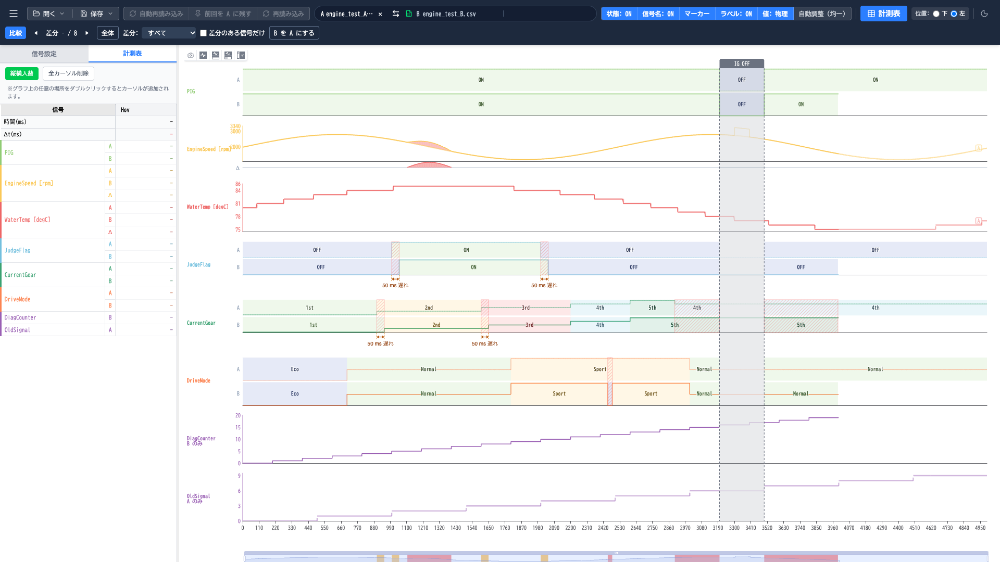
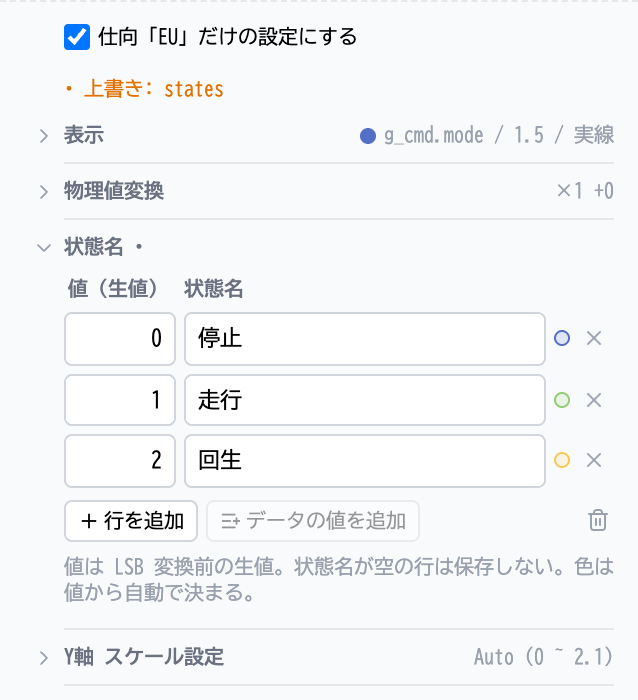

波形比較の目的と用語
プログラムを変えたとき、変える前に取った CSV と変えた後に取った CSV を見比べて、どこで、どう変わったかを確かめたい。ビューアは CSV を 1 つしか開けなかったので、2 つ目の CSV を重ねて表示し、値の違いとタイミングのずれを自動で見つけて、波形の上に示します。

画面のイメージは docs/mockups/waveform-compare-ui.html にもあります（ブラウザで開くと操作できます）。
A
比べる元の CSV。比較を始めるときに追加で開く。
B
比べる CSV。今まで開いていた CSV がそのまま B になる。
Δ
B − A。
値の違い
同じ時刻で A と B の値が違う区間。
タイミングのずれ
状態信号で、A と B の切れ目が同じ変わり方のまま前後にずれているもの。「50 ms 遅れ」のように、B が A より遅いか早いかで表す。
比較の画面仕様
1. 比較の開始と終了
- 「開く」メニューに「比較する CSV（A）を開く」を加える。開くと比較が ON になる。
- B を開いていて A がないときは、ファイル名の欄に「＋ A を開く」を出す。クリックで選ぶか、そこへのドロップで A を開く。
- B を開いているときに CSV をドラッグすると、画面を左右 2 つの受け口に分ける（左「B として開く（今までどおり）」、右「A（比較元）として開く」）。波形 CSV を 2 つまとめてドロップしたときは、更新日時の古い方を A、新しい方を B にする。
- A と B のファイル名の間の「⇆」で A と B を入れ替える。信号の設定、カーソル、表示範囲（時刻）は保ち、自動再読み込みの対象（ファイルの場所）も一緒に入れ替える。
- ツールバーのファイル名の欄は A → B の順に
A engine_test_old.csv ✕ | B engine_test.csvと並べる。✕ で比較を終える（A を閉じる）。 - ツールバーの「比較」ボタンで、A を開いたまま重ね表示だけを切り替えられる。ON のときはボタンを青くする。OFF のときは比較なしの画面と同じにする。
- A と B は時刻（ステップ × タスク周期）で揃える。片方にしかない時刻は、ない側を「値なし」として扱う。
- 片方にしかない信号は、ある側だけを描く。サイドバーと信号名の下に「B のみ」（または「A のみ」）と出す。
2. 波形の描き方
アナログ信号
B は実線、A は同じ色の薄い破線で重ねる。値の違う区間は 2 本の線の間を薄い赤で塗る。値の違いがある信号は、レーンの下に Δ の小さな波形（高さ 20 px ほど、表示範囲の最大の絶対値で振れ幅を合わせる）を出す。行名の「Δ」は縦軸の左に置き、ゼロの線に重ねない。
状態信号
比較が ON のときは、A と B を同じ高さの上下 2 段で描く（上が A、下が B）。2 段とも状態表示と同じ色の帯・状態名・段差の線で描き、A の段差の線は少し薄くする。食い違う区間は、2 段をまとめて淡い赤の細い枠と薄い斜線で囲む（状態の切れ目が埋もれない濃さ）。
タイミングのずれ
A と B の切れ目から補助線を下ろし、レーンの下に両矢印の寸法線を引いて、中央に「50 ms 遅れ」「30 ms 早い」と書く。
Δ +151.98 rpm の札を出す。札は波形と共通の座標計算で点に沿って上下し、ズームしても点に一致する。行の上下端では位置を寄せ、時間軸の目盛りや次のレーンに重ならないようにする。Δ = 0 の位置では出さない。差分の検出
- タイミングのずれは状態信号だけを対象にする。A と B の切れ目のうち、変わり方（変わる前の値 → 変わった後の値）が同じで、時刻の差が許容幅（初期値 500 ms）以内のものを組にする。
- 1 つの差分は「信号、種類（値の違い / タイミングのずれ）、開始時刻、終了時刻」を持つ。タイミングのずれは A の切れ目と B の切れ目の時刻も持つ。
保存と自動再読み込み
.wcpに A の CSV も入れて保存し、開いたときに比較の状態を戻す。A がない.wcpは今までどおり開ける。- 自動再読み込みは B だけを対象にする。
- 「B を A にする」ボタンで、今の B を次の比較の A にできる（変更を繰り返すときに使う）。
「前回を A に残す」
ON にすると、読み直すたびに前回読んだ内容と比べ、新しいテストかどうかを判断する。WinAMS はテスト中に同じ CSV を書き足し、流し直すときは中身を空にして先頭から書き直すため。
続き
前回の内容（書きかけかもしれない最後の行を除く）が新しい内容の先頭にそのまま残り、行数が減っていなければ、B だけを更新する。
新しいテスト
そうでなければ、前回読んだ B を A にして、新しい内容を B にする。
データがまだない
空にした直後や見出しだけのときは何もせず、次の変化を待つ。設定が OFF のときも同じ。
実装計画
Codex に段階ごとに実装を任せ、段階ごとに型チェック、ビルド、ブラウザでの確認を行ってからコミットする。
- 差分検出と A の読み込み —
src/utils/compare.tsに、A と B のChartData、状態名の対応（modeMapping）、無効区間の結果を受け取って差分の一覧を返す純粋な関数を置く。src/store/useWaveformStore.tsに A のChartData・ファイル名・元の CSV 文字列・比較の ON / OFF・差分の一覧・絞り込み・注目中の差分を持たせ、A を開く・閉じる・「B を A にする」処理を加える。A はparseWaveformCSVと同じ解析で読み、B の設定を変えない。 - 波形への描画 —
chartOptionsBuilder.tsとChart.tsxで、A の破線、値の違いの塗り、Δ の波形、状態信号の上下 2 段、斜線の枠、寸法線を描く。Y 軸の分断（breaks）がある信号でも、データを書き換えずに ECharts の機能で描く。比較が OFF のときの描画は変えない。 - ツールバー、サイドバー、計測表、ラベル —
Toolbar.tsxに比較の切り替え、◀ ▶、全体、絞り込み、「差分のある信号だけ」。Sidebar/に印と比較の結果。MeasureTable.tsxに A / B / Δ の列。カーソルのラベルと Hov の Δ の札。 - 保存、自動再読み込み、文書 —
.wcpの保存と読み込みに A を加える。useWaveformAutoReload.tsで B だけを読み直し、差分を計算し直す。README に使い方と画面写真を加え、npm run buildでdist/sim_gui.htmlを作り直す。
検証内容
信号情報 YAML v2
信号の意味（lsb・offset・unit・undefined・states）と見た目（グループ・高さ・色など）を分け、保存・設定の書き出し・.wcp の中の YAML に同じ形式を使う。平らな v1 と CSV の対応表も引き続き読み込む。
version: 2 variants: [国内, EU] signals: SPEED: {lsb: 0.01, offset: 0, unit: km/h, undefined: [65535]} MODE: states: {0: 停止, 1: 走行} variants: EU: {states: {2: 回生, 1: null}, unit: "-"} inactive: [{signal: MODE, when: [0], targets: [SPEED]}] view: layoutMode: manual groups: {車速: {expanded: true, visible: true, layout: lane, syncRange: false}} signals: SPEED: {group: 車速, weight: 2, color: "#f59e0b"} MODE: {checked: true}
仕向での重ね方
signalDefsは共通の定義・仕向ごとの差分・知っている仕向名・元の順番を持つ。画面の mapping（modeMappingなど）は、選んでいる仕向の実効値にする。statesは数値キーごとに重ね、nullは削除。ほかの意味の項目は丸ごと置き換える。- 意味の項目も仕向の上書きもない信号は
signalsから省き、view.signalsは残す。空の仕向の上書きは残す。
編集と仕向
意味の編集の書き戻し
- 選んでいる仕向に、その信号の上書きのエントリがあれば共通との差分へ、なければ共通へ書く。共通と同じ項目は差分から消し、空のエントリは残す。
- 信号設定の「仕向「V」だけの設定にする」をオンにすると空の上書きを作り、オフで削除して共通へ戻す。上書きしている項目に • を出す。
- 仕向の名前変更では、上書き・仕向名の一覧・今の選択を新しい名前へ移す。仕向の削除では上書きを残す。名前変更の重複の確認は、仕向ファイルと信号情報の名前の和集合で行う。
読み込みと当て直し
- 今の CSV にない意味・見た目と、空のグループも残す。保存は今の一覧の順を先に、残りを読み込み時の順で後ろにする。
- 新しい CSV には残した設定を当て直す。自動再読み込みでは表示を保つ。CSV の読み込みとライブの信号の追加による内部の当て直しでは、
viewState由来の表示の状態を変えない。 - 手で読んだ YAML は意味・グループ・並びを置き換え、書いていない信号の見た目は残す。複数のファイルを一度に読んだときは、2 つ目以降を項目ごと（状態名はキーごと）に重ねる。v1 の追加読み込みでは、そのファイルに書いてある項目だけを共通に重ねる。不正な YAML は通知してストアを変えない。

チェックをオンにした信号の意味の編集は、EU の差分に入る。
仕向の選び方
ライブモード
右パネルの doc.selected に追従する（起動中の detecting も含め、ファイルの viewState.variant より優先）。候補と保存時の variants は、仕向ファイルと信号情報の名前の和集合。信号情報にだけある仕向を選ぶと、値が空の仕向を仕向ファイルにも作る。
ビューアだけ
ツールバーに、信号情報に仕向名があるときだけ選択欄を出し、「（共通）」と各仕向を選べる。選択は sim-gui:signals-variant:v1 に覚える。.wcp の最上位の viewState に variant も保存し、ビューアでだけ復元する。
自動の読み込みと保存
ライブモード
- 起動時、仕向を読んだ直後に
GET /api/signalsを呼ぶ。ファイルがなければそのまま始める。空のファイル（空白とコメントだけも含む）は、ファイルなしと同じ扱いで自動保存を有効にする。 - 取得エラー・不正な YAML なら自動保存を止め、上のバー（LiveBar）に理由とパスを出す。右パネルの仕向への追従は続ける。
- 記録やカーソルだけの更新では YAML を作らない。同時の保存は順に処理し、保存の失敗は表示して次の変更で再び試す。
- 保存先は
sim.cfgのgui_signals（既定sim_gui_signals.yaml、相対パスは cfg のフォルダから）。サーバは中身を解析せず、要求からパスも受け取らない。
ビューアだけ
- サーバがないと分かったら
sim-gui:signals:v1（localStorage）から YAML を読み、同じ見張り方で localStorage に保存する。 - ストレージが使えなくても、例外を外へ出さない。
移行
- 古い YAML を起動後に手で読み込むと、v2 で自動保存されて移行できる。
- 読み込むとき、
Sample/EngineSpeedのようなファイル名つきの信号名は信号名だけにそろえる。両方あれば信号名だけの設定を採り、ファイル名つきは捨てる。同じ短い名前のファイル名つきが 2 つ以上ある（a.c/s_cntとb.c/s_cntなど）ときは、短い名前があっても区別のため全部残す。短い名前が予約語（inactiveなど）になるものも残す。無効区間の条件信号も同じ。